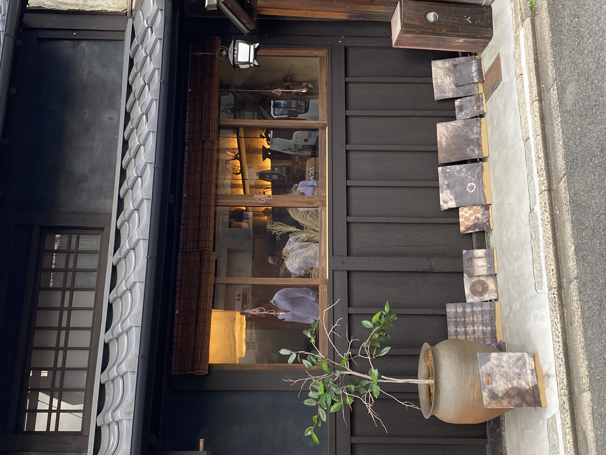
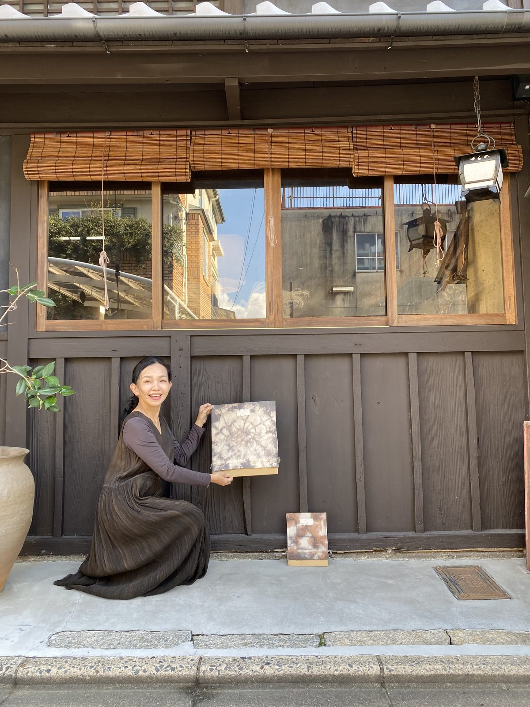
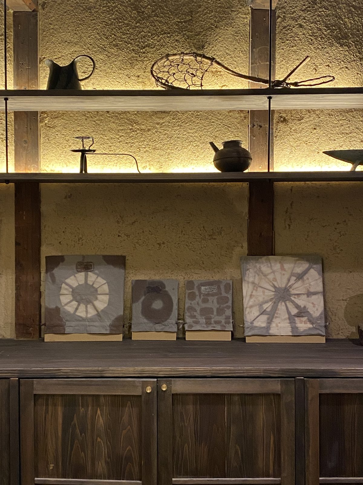
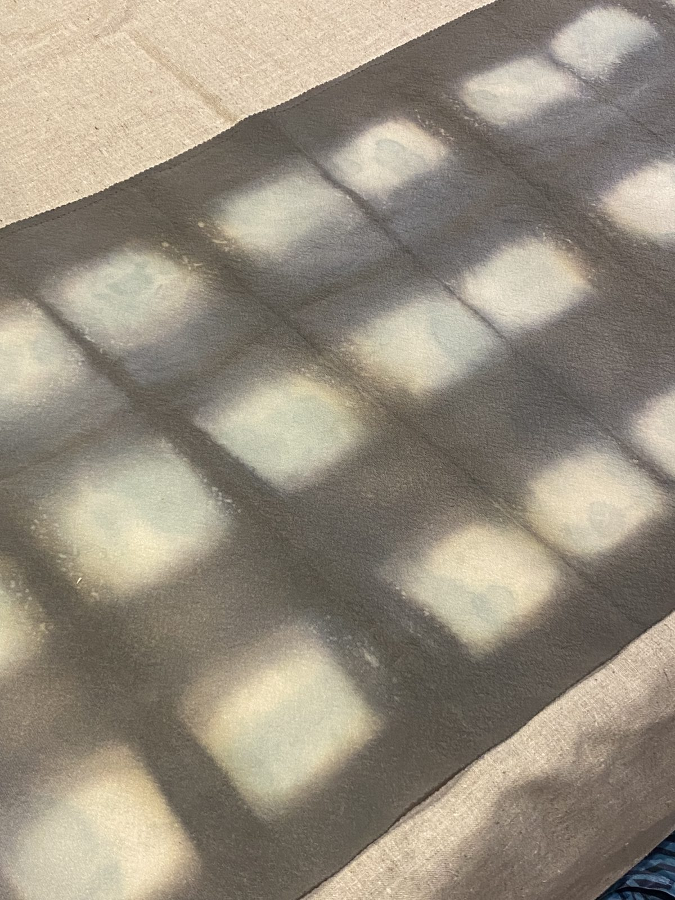
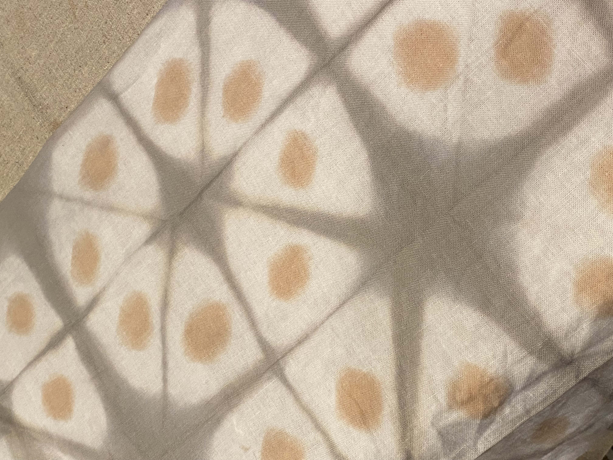
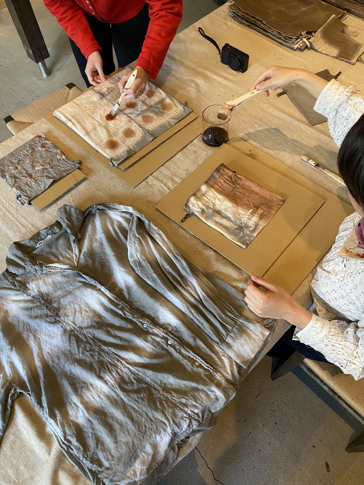
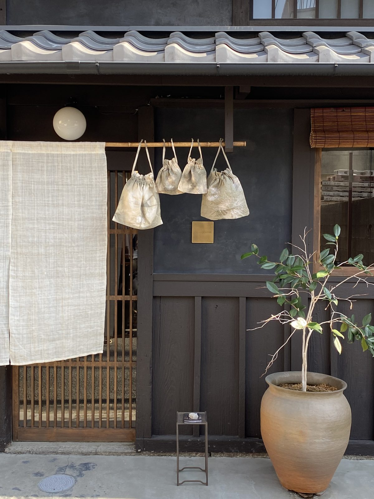
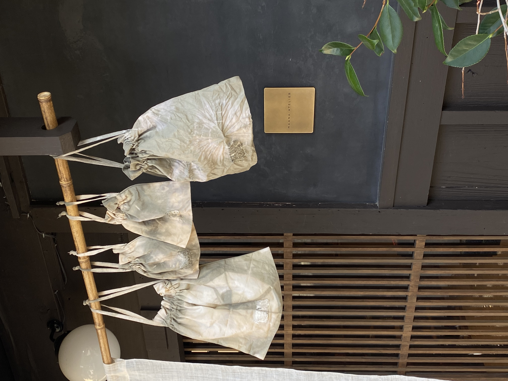

i.
Welcome teaウェルカムティー
You're greeted at the atelier with a seasonal cup of tea, and a warm introduction to the day.アトリエにて季節のお茶でお迎えし、本日の流れを丁寧にご案内いたします。
Design your own bags with natural dyes from wild tea leaves and patterns from shibori techniques.お茶の自然な染料と絞りの技法で、ご自身だけの巾着袋をデザインしましょう。
For centuries in Japan, tea has played an all-encompassing role, from the sacred and ceremonial to the modern daily ritual. Alongside that history, tea leaves have long been used to dye textiles, a quiet tradition of making the most of what nature provides.お茶は何世紀にもわたり、日本の暮らしのあらゆる場面に寄り添ってきました。神聖な儀礼から日々の習わしまで。その歴史と並んで、茶葉は布を染める素材としても古くから用いられ、自然の恵みを大切に使い切る、静かな伝統が受け継がれてきました。
Dyes extracted from tea are gentle on the earth, and every batch produces subtly different hues. In this playful workshop, you'll explore natural colour and pattern, designing and dyeing two drawstring bags to take home.茶から抽出した染液は地球にやさしく、染め上がりは一回ごとに少しずつ異なる、繊細な色合いを見せてくれます。本ワークショップでは、自然の色と模様を楽しみながら、ご自身の手で大小2つの巾着袋をデザイン・染色していただきます。
You leave with two drawstring bags — known in Japan as kinchaku-bukuro (巾着袋) — tea-dyed and folded by your own hands.2つの巾着袋を、ご自身の手で染め上げ、結んだままお持ち帰りいただけます。
One small and one large kinchaku-bukuro, made with 100% cotton and including wamen details.大小の巾着袋を1つずつ。100%コットンで、和紋のディテール入り。
Your bags will need a day to dry, but you get to take them home once the workshop ends, packed in waterproof material.巾着袋は完全に乾くまで1日ほどかかりますが、ワークショップ終了後にそのままお持ち帰りいただけます。防水素材で包んでお渡しします。
Tea-dyeing uses no harmful synthetics, while tea's natural antibacterial properties make it ideal for storing everyday essentials.化学染料は一切使用しません。茶葉が持つ自然の抗菌作用により、日々の小物を収納するのにも最適です。
Two hours at the atelier with your teacher, guided from start to finish. アトリエで過ごす2時間。講師がはじめから終わりまで丁寧にご案内いたします。
You're greeted at the atelier with a seasonal cup of tea, and a warm introduction to the day.アトリエにて季節のお茶でお迎えし、本日の流れを丁寧にご案内いたします。
Folding, binding, and tying your fabric — the small choices that shape the final pattern.布を折り、しばり、結びます。その小さな選択の一つひとつが、仕上がりの模様を形作っていきます。
Hand-picked Ise tea (cultivated for over a thousand years in Kameyama) is steeped and your bags are dipped, folded, and re-dipped.千年以上にわたり亀山で育まれてきた伊勢茶を煎じ、布をくり返し浸し、ひらき、染め重ねていきます。
The reveal — undo the ties and watch the design emerge. Pack the bags for the journey home.結びをほどき、模様が現れる瞬間。旅にお持ち帰りいただきやすいよう包んでお渡しいたします。
Guests come for an afternoon and leave with a panel, but here's what stuck with them after returning home. ワークショップで一枚のパネルを手にお帰りになった方々が、帰国後も印象に残ったことを言葉に残してくださっています。
I expected a craft class. I left with a small piece of Kyoto I now look at every morning, and a much quieter mind than when I arrived. 単なる工芸の体験だと思っていました。終わってみると、毎朝目にする小さな京都を一片と、来た時よりもずっと静かな心が残っていました。
The teacher took it slow. By the time we were finishing the panel I'd forgotten about my phone, my flight, all of it. The smell of the clay was the best part. 先生のペースがとてもゆっくりで、仕上げの頃にはスマホもフライトもすっかり忘れていました。土の匂いが何より良かったです。
It travelled home flat in my carry-on and now hangs above my desk. People always ask what it is — that's a fun conversation. 機内持ち込みで平らに持ち帰り、今は仕事机の上に飾っています。「これ何？」と聞かれるたび、楽しい会話が始まります。









Kyoto runs at half-speed. Temple bells in the early hours. Shop curtains drifting at noon. The river quiet by dusk. The seasons change without asking permission — cherry, plum, maple, snow. 京都はゆっくりとした速度で流れます。早朝の鐘の音。昼の暖簾が揺れ、夕暮れに川は静まり返ります。桜、梅、楓、雪――季節は誰の許しも得ずに、そっと移ろっていきます。
You arrive at Maana Atelier on a small street in Nishijin, the old weavers' district. Inside, the machiya keeps its own air: cool stone, soft daylight, the smell of clay. 古くからの織りの町、西陣の小さな通りにあるMaana アトリエへ。一歩中に入れば、町家ならではの空気が満ちています。冷たい石、やわらかな光、そして土の香り。